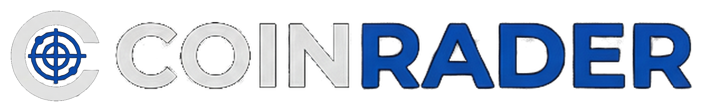

毎日3分
相場の温度感
トレンド把握
暗号資産の“いま”を
一画面で把握
時価総額・トレンド・急騰急落をまとめて表示。
迷わず「今日の注目」からチェックできます。
今日の注目を見る
主要コインTOPへ
※価格・ランキングは取得元APIの反映タイミングにより遅延する場合があります。
始め方
状態: 初期化中…
更新: --
更新
トレンド
上昇率
出来高
時価総額
概況
取引所おすすめ（広告・PR）
国内取引所を用途別に比較。公式サイト/キャンペーン導線をまとめています。
取引所おすすめを見る
始め方
※当サイトは一部リンクにアフィリエイト広告を含みます。
トレンド TOP5
CoinGeckoの「トップトレンド」（API: /search/trending）／カード内チャート：過去7日スパークライン（サンプル間隔・点数はAPI依存）
もっと見る
データ取得中…
上昇率 TOP5
24h騰落率TOP5（時価総額上位250銘柄から抽出）／カード内チャート：過去24時間（1d）（サンプル間隔・点数はAPI依存）
もっと見る
データ取得中…
出来高 TOP5
24h出来高TOP5（時価総額上位250銘柄から抽出）／カード内チャート：過去24時間（1d）（サンプル間隔・点数はAPI依存）
もっと見る
データ取得中…
時価総額 TOP20
時価総額上位20（JPY）／カード内チャート：過去7日スパークライン（サンプル間隔・点数はAPI依存）
もっと見る
データ取得中…
Market Overview
※追加APIなし：時価総額上位250（JPY）から算出した概況
もっと見る
BTC / ETH / ステーブル / Others の時価総額構成比（対象: 上位250の合計）
上昇 / 下落（7d推移 / 上位250）
-
青＝上昇数
赤＝下落数
上位250を対象に、7日前を基準にした累積リターンで「上昇/下落/横ばい」を判定し、日次の推移を表示（青＝上昇、赤＝下落、灰＝横ばい）。軸は見やすさのため非表示です。
平均リターン（7d推移 / 上位250）
-
上位250の各銘柄について、7日前の価格を基準(0%)として現在までの累積リターンを算出し、その平均を表示します。0より上は平均的に上昇、下は下落。
上位250 時価総額合計（推定7d推移 / JPY）
-
推定: 各銘柄の現在の時価総額×(各時点価格/現在価格) を合算（供給一定の近似）。
上位250 出来高合計（推定7d推移 / JPY）
-
注意: 出来高の履歴は /coins/markets では取れないため、現在出来高×(価格比) の簡易推定（目安）。正確な出来高の推移には別データソースが必要です。
※推移グラフは追加APIなしで作るため、上位250の「7日スパークライン」等から概算しています（目安）。